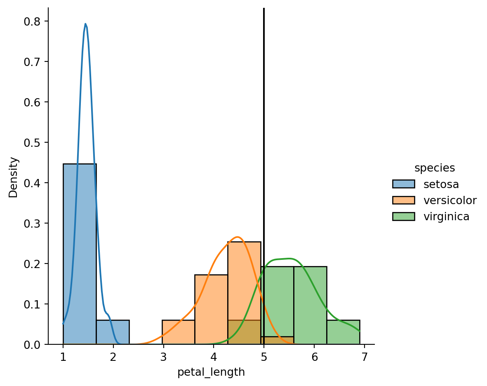

import seaborn as sns
df = sns.load_dataset("iris")
df.head()| sepal_length | sepal_width | petal_length | petal_width | species | |
|---|---|---|---|---|---|
| 0 | 5.1 | 3.5 | 1.4 | 0.2 | setosa |
| 1 | 4.9 | 3.0 | 1.4 | 0.2 | setosa |
| 2 | 4.7 | 3.2 | 1.3 | 0.2 | setosa |
| 3 | 4.6 | 3.1 | 1.5 | 0.2 | setosa |
| 4 | 5.0 | 3.6 | 1.4 | 0.2 | setosa |
Janelle Rose
December 7, 2023
This blog post will use Naive Bayes classification to calculate the likelihood of a flower species given its petal length. The example will use a single flower with the petal length of 5 and calculate the probability of it being in each flower species.
| sepal_length | sepal_width | petal_length | petal_width | species | |
|---|---|---|---|---|---|
| 0 | 5.1 | 3.5 | 1.4 | 0.2 | setosa |
| 1 | 4.9 | 3.0 | 1.4 | 0.2 | setosa |
| 2 | 4.7 | 3.2 | 1.3 | 0.2 | setosa |
| 3 | 4.6 | 3.1 | 1.5 | 0.2 | setosa |
| 4 | 5.0 | 3.6 | 1.4 | 0.2 | setosa |
Calculate the frequency of each flower species in the dataset.
From looking at the probility density function plot it looks like a flower with a petal length of 5 will be a virginica. We’ll check the numbers in the next section.
import matplotlib.pyplot as plt
ax = sns.displot(df, x="petal_length", kde=True, hue="species", stat="density")
plt.axvline(x = 5, color = 'black')<matplotlib.lines.Line2D at 0x2a6d6220b10>
Equation \[\begin{equation} f(y \; | \; x_2) = \frac{f(y)L(y \; | \; x_2)}{f(x_2)} = \frac{f(y)L(y \; | \; x_2)}{\sum_{\text{all } y'} f(y')L(y' \; | \; x_2)} . \tag{14.4} \end{equation}\]
Calculation Prep
from scipy.stats import norm
#L(y = setosa | petal_length is 5)
setosa_pdf = norm.pdf(5, 1.462, 0.173664)
#L(y = versicolor | petal_length is 5)
versicolor_pdf = norm.pdf(5, 4.260, 0.469911)
#L(y = virginica | petal_length is 5)
virginica_pdf = norm.pdf(5, 5.552, 0.551895)
#marginal pdf of observing a flower with a petal length of 5 (Denominator of the Equation)
m_pdf_5 = (50/150 * setosa_pdf) + (50/150 * versicolor_pdf) + (50/150 * virginica_pdf)prob_setosa = (50/150 * setosa_pdf) /m_pdf_5
prob_versicolor = (50/150 * versicolor_pdf) /m_pdf_5
prob_virginica = (50/150 * virginica_pdf) /m_pdf_5
print('The probability that a flower will be setosa with the petal length of 5 is: ', prob_setosa)
print('The probability that a flower will be versicolor with the petal length of 5 is: ', prob_versicolor)
print('The probability that a flower will be virginica with the petal length of 5 is: ', prob_virginica)The probability that a flower will be setosa with the petal length of 5 is: 2.5122190818728214e-90
The probability that a flower will be versicolor with the petal length of 5 is: 0.3591766144499696
The probability that a flower will be virginica with the petal length of 5 is: 0.6408233855500304Using the naive Bayes classification approach, there is a 64.08% change that a flower with a petal length of 5 will be virginia. This aligns with what we see in the probability density function plot.